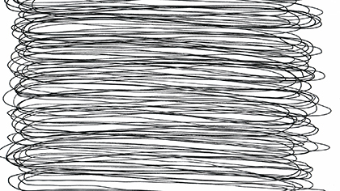
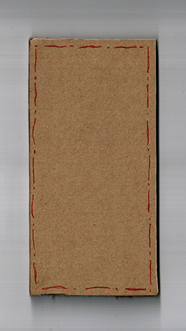
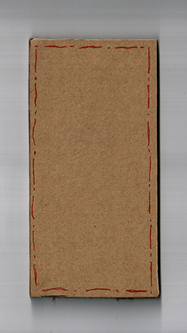
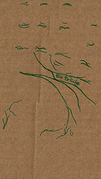
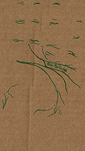
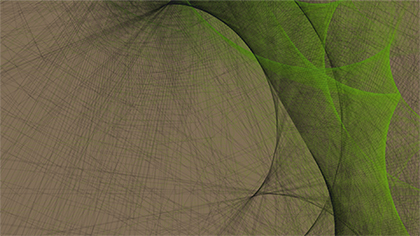
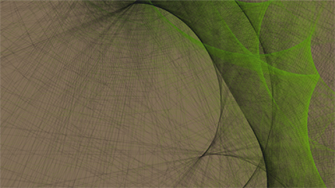
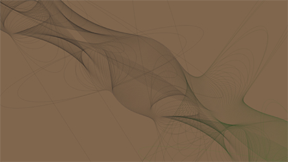
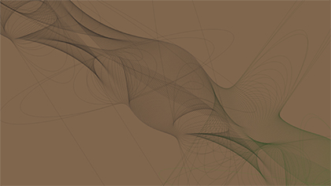

Lifelines
...is a project which was part of the seminar Input/Output Fundamentals of Process-Oriented Design supervised by Fabian Morón Zirfas. See the whole process from the first analog algorithm to a final physical product (with all the experiments and thoughts inbetween).
Part 1 | Analog Algorithm
Inspired by works of the us-amercian conceptual artist Sol LeWitt, we started with writing an analog algorithm and giving it to our course-mates to follow the instructions.
Algorithm Number One
Original text:
schwarz gefärbtes wasser.
zeichne eine möglichst lange linie.
English translation:
black colored water.
draw a preferably long line.
Results




After seeing the first drawings of my first algorithm it became obviously that there was a lot space for different interpretations of the different people. Simultaneously I realised that the autor can influnece that fact directly. That's why playing with some more parameters/ rules was my focus in the second iteration.
Algorithm Number Two
Original text:
Dauer: bis zu 3 minuten
Material: Stift, rot
umrahme deine zeichenfläche. zeichne eine möglichst lange linie mit unterbrechungen.
wähle einen gegenstand der nicht über den rand deiner zeichenfläche hinausraugt.
zeichne entlang der kontur. wiederhole arbeitsschritte oder nicht.
English translation:
duration: maximum 3 min.
material: pen, red
Frame the drawing area. draw a preferably long line without interruptions.
Choose an item, which dont cross your drawing frame.
Draw along the contour. Repeat steps of the process or not.
Results
 


Only a small amount of specifications (f.e. duration and material) created a total different frame for the user to convert the words into a drawing. One person started to draw along the contour of parts of her body- that was the inspiration for the third iteration of an analog algorithm.
Additionaly the setup of the drawing situation itself changed: the person had an provided mp3 player with headphones to isolate itself from the outside during the drawing process with a self-imposed music piece.
Algorithm Number Three
Original text:
die dauer eines liedes.
material: tintenfedern/ karton, braun/ tinte, grün
verwende alle materialien.
zeichne die linien (bzw. falten) deiner linken oder rechten handinnenfläche.
zeichne nicht die kontur deiner hand.
maßstab 1:1. beschrifte eine linie mit einer bezeichnung deiner wahl.
English translation:
the duration of a music piece.
material: nib/ carton, brown/ ink, green
use all materials. draw the lines/ wrinkels of your left or right palm.
don’t draw the contour of your hand.
scale 1:1 Give one of the lines a free choosen title.
Results
 



Part 2 | Digital Algorithm
In the second part the analog algorithm was translated into a digital one. A perfect tool to create graphics to a drawing canvas is the java script libary p5.js, which is very similar to the processing language. Concerning to the analog results above it was the aim to visualize LIFELINES which reminds you on the individual lines in your palm.
Screenshots
 

 

Digital Result / LINK folgt
Part 3 | Application of the Algorithm
For which application you could use your code or your digital result for?
Idea Number One
You could create an individual graphic as a signature. It's a digital fingerprint with an aesthetic aspect.
Mock Up: Signature on a Letter

Idea Number Two
When you read a book, you do one thing quite similar as a palm reader does: you do it line by line.
Because of this fact i came up with the idea for the following product: a line-orientated bookmark.
Bookmarks a usually page orientated- you can only mark a page with them.
But with this recycled product (made of a floppy disk blende and magnets of a cigarette paper wrapper)
you’re free to interrupt reading within every line. You can clip it on a page of a book
and the small window make it easy to find back to the line you would like to continue reading.
The Line-Oriented Bookmark

The course "Input/Output Fundamentals of Process-Oriented Design" took place during the winter semester '15/'16 at the University of Applied Sciences Potsdam. HERE you can find more projects.